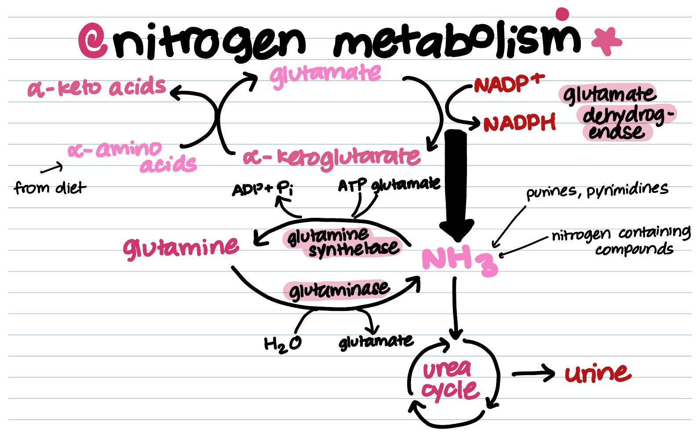

8th Path: Nitrogen Metabolism
Welcome to our page on nitrogen metabolism. This process includes a set of different pathways that both utilize and dispose of nitrogen accordingly. Let's take a look at how we obtain nitrogen, and the processes that it is used for.
What is Nitrogen Metabolism?
Nitrogen metabolism encompasses all of the ways the body uses nitrogen from intake. A majority of nitrogen intake is derived from dietary proteins. Unlike with fats and carbohydrate processes, nitrogen is not stored in the body-- it is either used or excreted as waste. The amount of nitrogen excreted and taken in can be measured as positive or negative. This is known as nitrogen balance. So what makes a nitrogen balance "positive" or "negative"?
| Positive Nitrogen Balance | Negative Nitrogen Balance |
|---|---|
|
|
What is the significance?
All processes in this pathway are necessary to maintain healthy nitrogen balances. Ammonia is toxic to the body, and can easily be fatal if not excreted through the urea cycle, which synthesizes urea for urine excretion, or utilized to synthesize amino acids. Nitrogen metabolism also generates NADPH.
Let’s Talk Phases!
Here's the big picture of nitrogen metabolism in 3 phases.
| Phase | Summary |
|---|---|
| Assimilation | Ammonia (NH₃) is incorporated into glutamate and glutamine using enzymes like glutamine synthetase. Glutamate acts as the primary nitrogen donor. |
| Transamination | Amino groups are transferred between molecules by transaminases, often involving glutamate and α-ketoglutarate. |
| Excretion | Excess nitrogen is converted to urea in the urea cycle and excreted in urine, preventing toxic ammonia accumulation. |
Let’s Talk Activators and Inhibitors!
Just like every process, nitrogen metabolism enzymes have activators and inhibitors too. Two enzymes from the entire cycle in particular stand out. Take a look at them below.
| Enzyme | Reaction | Activator | Inhibitor |
|---|---|---|---|
| Glutamine Synthetase | Glutamate → Glutamine | ATP, NH₃ | AMP, Ala |
| Carbamoyl Phosphate Synthetase I | NH₃ + CO₂ → Carbamoyl Phosphate | N-acetylglutamate | -- |
Full Diagram
Check out this diagram, outlining the full picture of the pathway.
